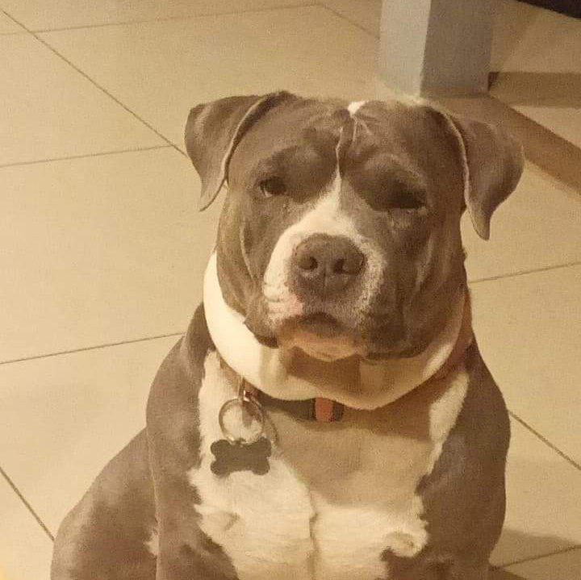

Stalker Dogs 101

What to do in a situation that you are being stalked by your own dog:
- Don't make eyecontact
- Go to a room and close the door before said stalker dog can come in
- Proceed to cuddle your other dog
What is a stalker dog?
A stalker dog is one that would appear on DogLine. People would interview them to see what they were thinking when they commited their horrible offenses to humans and other dogs but more specifically.... CATS! Oh the poor cats that have "disapppearing" in your neighborhood.
How do you know you have a stalker dog?
Most would not put two and two together as they don't think much about it like all great masterminds your stalker dog is great at covering up their hanece act.
- At first, you might notice your dog following you everywhere being all sweet and innocent... a little too innocent!
- After that, your dog will start to test your response time by doing something bad to see how you will respond as well as how long it will take.
- Next, the cat population in your neighborhood might have gone down greatly over the last couple weeks of your dog either coming to adulthood or of you owning your adult dog.
- Finally, any dogs you get while that one is still alive will randomly go missing. Never to be seen again until a few weeks later when ASPCA picks them up off the side of the road... DEAD!
What do they look like?
I know this can be super scary in the sense that you don't know what to do.. and how will you know what a stalker dog looks like? well here are some pictures of a stalker dog!
Who do we call?!
Well since GhostBusters are on holiday right now you can submit a form to let us know you have a stalker dog in your home. Along with the breed and name of your stalker dog. We ask that you be cautious when you do so cause you never know if they are watching you!